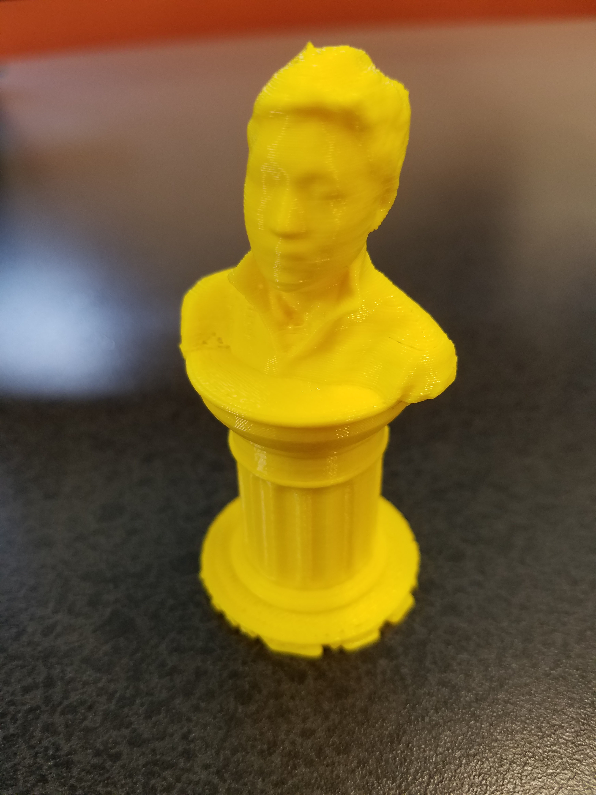

So, I used 3D Knockout Scanner and with the help of Mr. Gerber, scanned my head.
The head was a .obj file so I put it in AutoDesk meshimixer and imported a pedestal file with it.
I had to fix some holes and bloated parts of the head and append the head and the pedestal together.
Then I exported it as a STL file and put it in Makerbot in order to print the model
On the bottom, you can see how the 3D model print turned out.


I thought about it a bit and made an object that can't be made subtractively.
It is a hollow sphere with a hole in it that is within a cube that has open circular faces.
It acts kind of like a fidget cube.


...